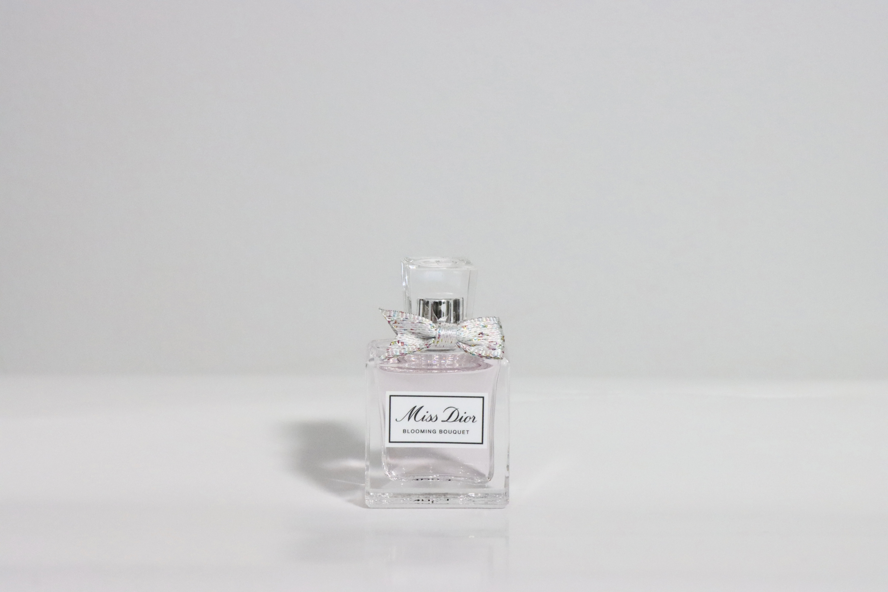
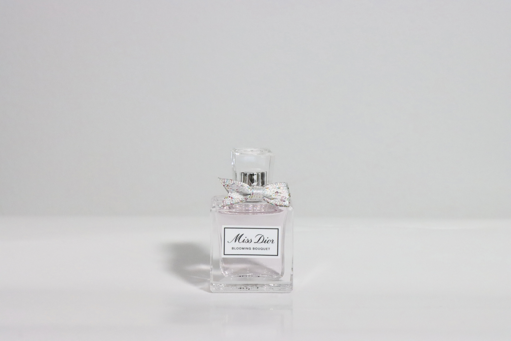
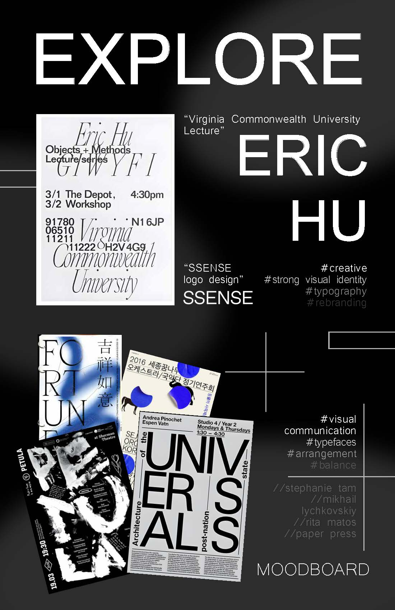
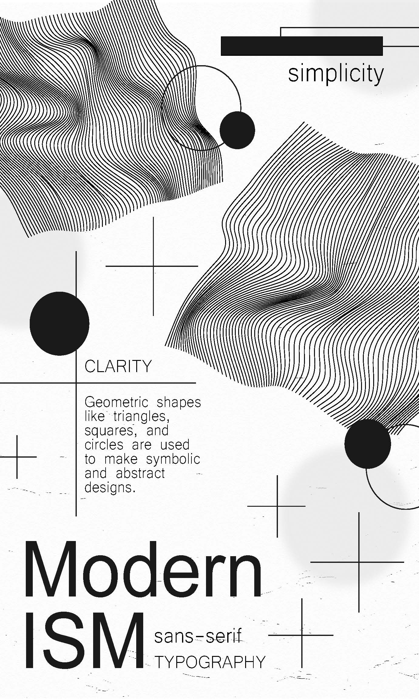
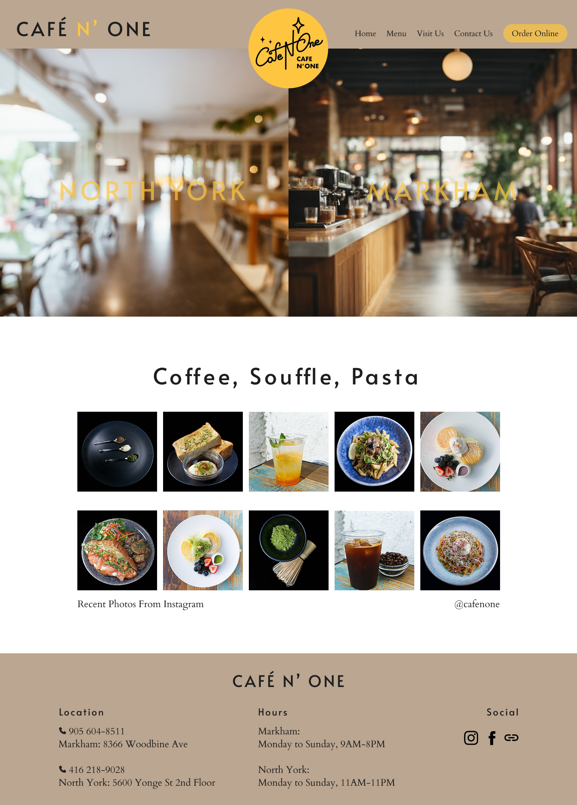

In GBDA 201, I got hands‑on experience with the Canon EOS 90D, diving into both macro and standard product shots. I chose jewelry and a perfume bottle as my subjects, these two items let me experiment with texture, light, and composition. This project taught me a lot about manual exposure and depth.
My Projects
GBDA 201: Photography Projects
 

GBDA 202: Poster Design Projects


High Fidelity Mockups
I’ve streamlined Café N One’s site so you’ll find what you need without extra clicks. I moved all photos onto their relevant pages instead of moving back and forth from the gallery back to the menu. I chose a taupe‑brown, gray, and yellow palette to capture the café’s cozy‑chic vibe, with clean spacing and fonts guiding your eye. Instagram is now front and center for real‑time updates, and both locations are highlighted on the homepage so you can pick your favorite spot. The website redesign is overall more efficient and clear for a more user-friendly experience.
